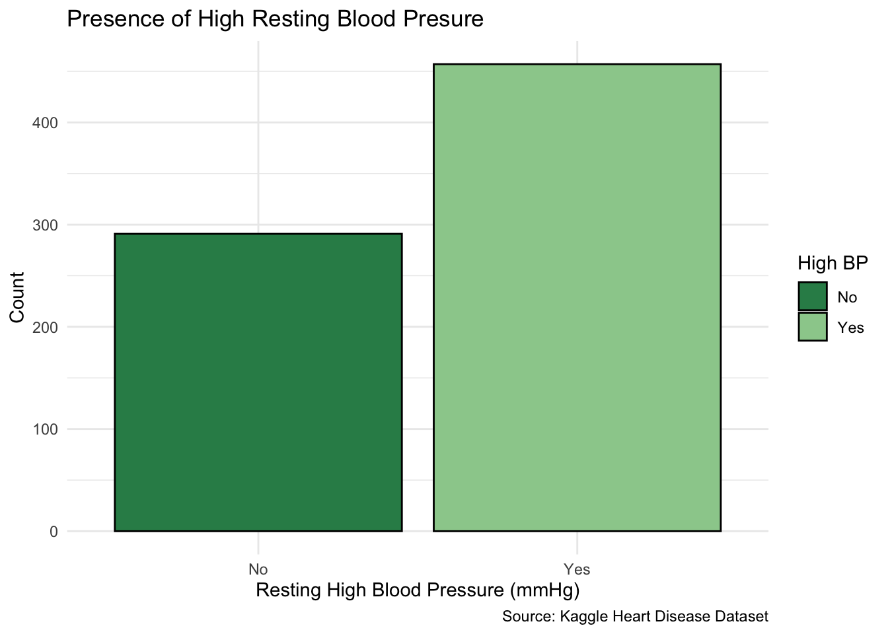
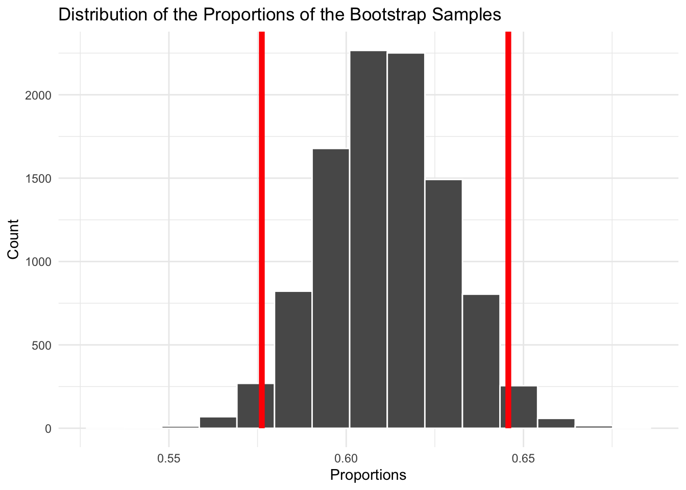
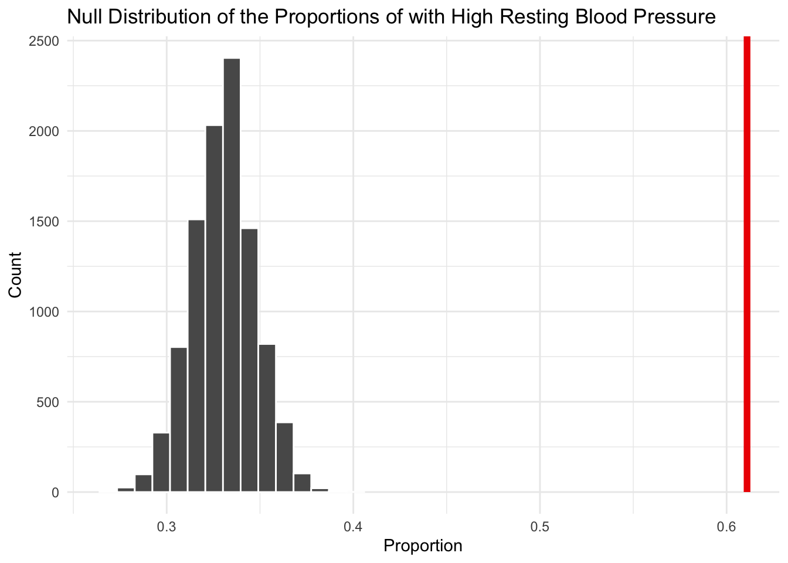

This post will conduct a hypothesis test to evaluate the cleaned Heart disease dataset I analyzed from my Exploratory Data Analysis of Heart Disease post. The data consists of patient medical information used to explore patterns related to heart disease. The data set was retrieved from Kaggle, however, originally based on the Cleveland Heart Disease dataset. Collectively, 748 patients will be examined, with each row representing a single patient.
The question guiding this analysis: Is the proportion of individuals that have high blood pressure within this Heart Disease data set, higher than the global average?
Exploratory Analysis
To begin, I took the observations for resting blood pressure and created a new column determining whether or not the patient’s value is considered high blood pressure. According to various health organization reports, such as the World Health Organization and the Center for Disease Control, a current global standard for high resting blood pressure is defined as >= 130 mmHg.
To visualize this data, I then created a bar chart depicting the amount of individuals that have and do not have high blood pressure.
Code
source ("Hypothesis_Test_Heart_Disease.R") Barchart_BP <-ggplot(hypothesis_test_dataset, aes(x = High_BP, fill = High_BP)) +geom_bar(color ="black") +scale_fill_manual(values =c("Yes"="darkseagreen3", "No"="seagreen4"))+labs(x ="Resting High Blood Pressure (mmHg)", y ="Count", title ="Presence of High Resting Blood Presure", caption ="Source: Kaggle Heart Disease Dataset" ) +guides(fill =guide_legend(title ='High BP'))+theme_minimal()
Code
Barchart_BP

From this plot, we can see the total number of individuals with high resting blood pressure is 457 out of the total sample size of 748 (61%). This gives a sample proportion of 0.61, indicating a notably uneven split between the groups.
Null Value
According to World Health Organization’s estimate, 1.4 billion, or 33% of adults, 30-79 years old had hypertension in 2024. This benchmark is significant because it provides a standardized reference point for the prevalence of high blood pressure among adults globally.
Hypotheses
Null hypothesis (H₀): The proportion of adults with high blood pressure in this dataset is the same as the global prevalence reported by the World Health Organization ( H₀ : p = 0.33)
Alternative hypothesis (Hₐ): The proportion of adults with high blood pressure in this dataset is greater than the global prevalence reported by the World Health Organization ( Hₐ : p > 0.33)
This is a one sided test looking at the right/upper tail because I am testing if the proportion in the data set differs by having a greater rate than the global statistic.
Bootstrap Confidence Interval
This plot represents the bootstrap distribution of the sample proportion of individuals with high resting blood pressure (≥ 130 mmHg). The red markings indicate the 95% confidence interval. This bootstrap is repeated with replacement 10,000 times to ensure a higher precision in the sample distribution.
BP_boot_dist |>visualize() +shade_confidence_interval(ci, color ="red", fill =NULL) +labs( title ="Distribution of the Proportions of the Bootstrap Samples",x ="Proportions",y ="Count" ) +theme_minimal()

With a 95% bootstrap confidence interval, there is a lower bound of 0.576 and an upper bound of 0.646. This means we are 95% confident in that the true proportion of indiviuals with high resting blood pressure in this population lies between 56.7% and 64.6%. Before running the test, we can see the null value (0.33) based on the data provided by the WHO, lies well outside the interval. This suggests that the proportion in this sample is higher than the global benchmark we are comparing against.
BP_p_value <- BP_null_distribution |>get_p_value(obs_stat =457/748, direction ="greater")
The observed statistic is the sample proportion of adults with high resting blood pressure. It is calculated to be 0.611, gathered from 457/748. In addition, the p-value is a very miniscule value close to 0. This means that there was no sample that was simulated under the null that calculated a result to be as similarly high of a proportion as the observed statistic in the real data set.
Visualizing the P-value
Code
visualize(BP_null_distribution) +shade_p_value(obs_stat =457/748, direction ="greater") +labs( title ="Null Distribution of the Proportions of with High Resting Blood Pressure",x ="Proportion",y ="Count" ) +theme_minimal()

The null distribution is centered around 0.33, matching what is expected if the true proportion of high resting blood pressure corresponded with the global statistic. The red marking to the right most of the graph indicates the observed statistic of 0.61. Clearly, we can see that the observed statistic is far higher than the 10,000 samples simulated in this null distribution. In result, there is no observable region shaded by the p-value.
Decision
To determine significance level, I’ve selected the conventional critical value of 0.05. In conjunction with the gathered p-value being very close to zero, our data demonstrates it is unlikely under the null hypothesis, giving reason to reject it. This suggests a strong indication that the proportion of individuals high resting blood pressure exceeds the global benchmark.
Conclusion
The original data set from the Cleveland data was conducted in the late 1980s. The WHO statistic I am using as a comparison, is from 2024. This means the data is coming from two different time periods entirely. Its worth emphasizing that in this report, I am conducting a single proportion hypothesis test comparing a sample to a population benchmark, rather than conducting a time trend or historical comparison. Differences in time period could very well be a factor in influencing the comparison. Additionally, the data set of individuals selected of both the data set as well as the global benchmark and significant. The global statistic has been gathered with broad, diverse population, gathering data from adults ranging across the globe. On the other hand, the Cleveland data set is comprised of data from the US, Hungary, and Switzerland. In addition, the individuals selected for this data set were specifically chosen for clinical testing for heart disease. This means that there could have been sampling biases involved as these individuals are perhaps more likely to have higher blood pressure than the general public.
In all, the hypothesis test and bootstrap confidence interval give reason to support the same conclusion. We do reject the null hypothesis, that the high resting blood pressure rate in the sample could not likely have been due to chance. However, given the limitations it is significant to note this conclusion should be cautiously interpreted, as several factors can help to explain the observations.